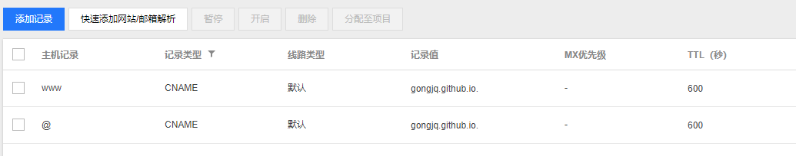

环境搭建
- windows上安装git shell
- 安装Node.js
安装Hexo
- 利用Node.js自带的npm工具安装hexo:
npm install -g hexo
- 建立Hexo目录，右键在当前路径打开Git Bash，初始化Hexo:
hexo init
下载NexT主题
在上面打开的bash中输入git clone https://github.com/iissnan/hexo-theme-next themes/next下载主题
本地预览调试
通过配置hexo目录下的 _config.yml文件以及目录 \themes\next 下的 _config.yml文件来实现博客内容的自定义。
利用一下两行命令来实现本地调试：
1 | #生成文件 |
在浏览中输入localhost:4000即可看到效果。
部署到github Page上
在github中建立远程仓库
仓库名格式为：$username$.github.io
在_config.yml上配置部署变量
1 | deploy: |
安装hexo-deployer-git自动部署发布工具
在git bash 中运行
npm install hexo-deployer-git –save
部署到github
hexo d
购买自己的域名，并解析到github域名上
首先在域名商购买域名
国内可以在阿里云和腾讯云上购买域名，如.com 和.cn等顶级域名，注意首年收费以及续费标准不一样。国内域名商购买的域名需要实名登记，好像github不需要备案。由于腾讯云有免费的dns解析服务，因此我选择的是腾讯云。
使用DNS服务进行域名解析
在域名管理上点击解析，使用dns进行解析，按照下图所示添加2条记录，修改记录要10分钟后才会生效。第二条记录解析不带www的地址。

在github项目上设置Custom domain
在仓库主页右上角点击Settings，进入设置页面。在Custom domain处填上自己购买的域名*.com，前面不需要加上www。仓库会自动在主目录下建立CNAME文件，文件第一行为自己设置的域名。
在设置中勾选Enforce HTTPS可以强制使用https协议。